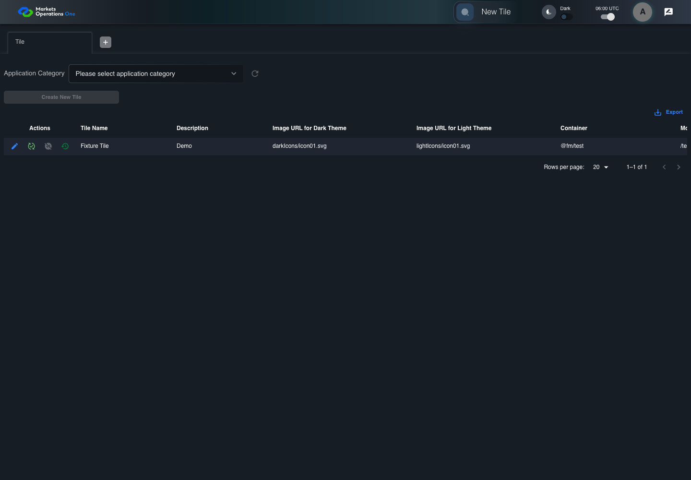

UI-ADM-SEL-004 actual administration UI with step evidence
PASS · application/run-050/ui-adm-sel-004-actual-administration-ui-with-step-evidence-c22ec58bd6d9-attempt-1 · ACTUAL_APPLICATION_LOCAL_SERVICES
Actual current React administration screens. Controlled browser login supplies UI-ADMIN-01 and TEST_OWNER, or the declared SUPER_USER. Controlled BFF routes return the case-declared records. Other controlled saves persist submitted field values. This run establishes frontend handling only. It does not execute BFF validation, storage, audit generation, or authorization.
2026-10-22T06:00:42.387Z to 2026-10-22T06:00:45.642Z
Assertions and result · Artifact manifest · Exact run inputs and source hashes
Result SHA-256:bd2f73a7ed93970913eb69aabf93b29002293e72086fe95e31ccc0d6b4f403b3Machine observations
- ui-origin-admin-requests.json
279bc68ddb4b7838a580b511b38221d121a7fe58164c236de30ee15def10c19e
Screenshot capture: CAPTURED. Named frames: 7.
Step screenshot bindings: COMPLETE. 6/6 canonical steps have execution screenshots.
Bindings measure structural coverage only. They do not establish screenshot content quality or relevance.
Screenshot content review: NOT_REVIEWED. Recorded context: 0/7 frames. Identical image bytes: 0 repeated frames. Recorded context does not establish human visual review.
Canonical step timeline
Given Admin A is authenticated as fixture UI-ADMIN-01 with the case-specific permissions
Execution: PASSED.
1. step-01 Visible state after step 1: Given Admin A is authenticated as fixture UI-ADMIN-01 with the case-specific permissions
2026-10-22T06:00:43.616Z · 1440×1000
Step: /Users/lushevol/code/github/ratan-release-impact/workbench/tasks/ui-test-coverage-20261022/test-cases.md:9455
SHA-256:5b18e61c9d4c5c1f0cee1300bdcda34b1418a25c1a97509d35e55f2dac5d5abcAnd category response contains Fixture Category
Execution: PASSED.
2. step-02 Visible state after step 2: And category response contains Fixture Category
2026-10-22T06:00:44.521Z · 1440×1000
Step: /Users/lushevol/code/github/ratan-release-impact/workbench/tasks/ui-test-coverage-20261022/test-cases.md:9456
SHA-256:7cc54edcafd56d6eed0d9a047468c929dcc6536721dbd256bb1fb9d4d69499d4When Admin A opens combobox named "Application Category" inside the "Tile" administration tabpanel
Execution: PASSED.
3. step-03 Visible state after step 3: When Admin A opens combobox named "Application Category" inside the "Tile" administration tabpanel
2026-10-22T06:00:44.624Z · 1440×1000
Step: /Users/lushevol/code/github/ratan-release-impact/workbench/tasks/ui-test-coverage-20261022/test-cases.md:9457
SHA-256:86609f05a8156fe1eb23049e8485d9d84cd4042be75ee5aaf3678c0244d33d50And Admin A clicks option named "Fixture Category" inside the popup for the "Application Category" combobox inside the Tile administration tabpanel
Execution: PASSED.
4. step-04 Visible state after step 4: And Admin A clicks option named "Fixture Category" inside the popup for the "Application Category" combobox inside the Tile administration tabpanel
2026-10-22T06:00:44.841Z · 1440×1000
Step: /Users/lushevol/code/github/ratan-release-impact/workbench/tasks/ui-test-coverage-20261022/test-cases.md:9458
SHA-256:962e352de8f594547f7682d402b60f979529333c52d5b925f82c36d2dab5d3deThen button named "Create New Tile" inside the "Tile" administration tabpanel is enabled
Execution: PASSED.5. step-05 Visible state after step 5: Then button named "Create New Tile" inside the "Tile" administration tabpanel is enabled
2026-10-22T06:00:44.921Z · 1440×1000
Step: /Users/lushevol/code/github/ratan-release-impact/workbench/tasks/ui-test-coverage-20261022/test-cases.md:9459
SHA-256:7943c30164bc64c92b99c6534c353a43b66245d5fdfeb5de0b424066427ec660And icon button named "refresh" inside the "Tile" administration tabpanel is enabled
Execution: PASSED.
6. step-06 Visible state after step 6: And icon button named "refresh" inside the "Tile" administration tabpanel is enabled
2026-10-22T06:00:44.992Z · 1440×1000
Step: /Users/lushevol/code/github/ratan-release-impact/workbench/tasks/ui-test-coverage-20261022/test-cases.md:9460
SHA-256:357909d1826acdfa6a74c4bde65d5d376a3421af7125f1fc3820aa9b08e9306e
Additional named frames

The final visible state after the named test assertions.
2026-10-22T06:00:45.117Z · 1440×1000Step: Test source: /Users/lushevol/code/github/ratan-release-impact/workbench/e2e/audit-specs/admin-expanded.spec.ts:15
SHA-256:
57b2a6caf86636472cb4d02bd80a64f35a2ba59460889159a5f34cf8d8ace59bScreenshots establish visible state only. Assertions and traces support functional claims.